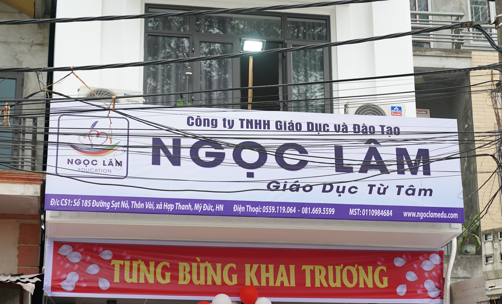

Trung Tâm Giáo Dục Ngọc Lâm
Trung Tâm Giáo Dục Ngọc Lâm là trung tâm bồi dưỡng kiến thức văn hóa, cung cấp các khóa học cần thiết như Toán, Ngữ Văn, Vật Lý, Hóa Học, Lịch Sử, Địa Lỹ, Sinh Học, Tiếng Anh đến luyện viết chữ đẹp... Chúng tôi cam kết mang đến môi trường học tập hiệu quả, đội ngũ giảng viên chất lượng và chương trình đào tạo thực tiễn, giúp các em phát triển toàn diện và đạt được mục tiêu học tập.
Chúng tôi tin rằng mọi sự chuyến hóa trong hành trình học tập bắt nguồn từ sự quan tâm chân thành. Tại Trung Tâm Giáo Dục Ngọc Lâm, chúng tôi không chỉ giúp học sinh tiếp thu kiến thức, mà còn tạo điều kiện để các em có thể phát triển khả năng học tập một cách tự tin và linh hoạt.

ĐỘI NGŨ GIÁO VIÊN
Các thầy cô có trình độ chuyên môn, chuyên nghiệp, nhiệt huyết và tận tâm.
GIÁO TRÌNH GIẢNG DẠY
Giáo trình chuyên sâu, bám sát chương trình của Bộ GD&ĐT.
CƠ SỞ VẬT CHẤT
Trang thiết bị hiện đại và tiện nghi
môi trường học tập chuyên nghiệp an toàn.
LIÊN LẠC VỚI GIA ĐÌNH
Mọi sự tiến bộ của con bạn đều được ghi nhận và được báo cáo sau mỗi buổi học.
Lợi ích khi học thêm tại trung tâm
Việc học thêm tại trung tâm mang lại nhiều lợi ích quan trọng, đặc biệt đối với học sinh trung học phổ thông đang cần củng cố kiến thức, nâng cao điểm số hoặc chuẩn bị cho các kỳ thi quan trọng. Dưới đây là một số lợi ích khi học thêm tại trung tâm là một lựa chọn tốt:
1. Được giảng dạy bởi giáo viên giàu kinh nghiệm
🔹 Trung tâm dạy thêm thường có đội ngũ giáo viên giỏi, có nhiều năm kinh nghiệm trong giảng dạy và luyện thi.
🔹 Giáo viên tại trung tâm có thể hướng dẫn phương pháp học tập hiệu quả, giúp học sinh tiếp thu kiến thức nhanh hơn.
2. Bám sát chương trình học và luyện thi hiệu quả
🔹 Hệ thống bài giảng tại trung tâm được thiết kế phù hợp với chương trình của Bộ GD&ĐT.
🔹 Học sinh được làm nhiều dạng bài tập, đề thi thử để rèn luyện kỹ năng làm bài.
🔹 Đặc biệt hữu ích với các kỳ thi quan trọng như thi vào lớp 10, thi tốt nghiệp THPT, luyện thi.
Với đội ngũ giáo viên Giàu kinh nghiệm. Chúng tôi đem đến 1 dịch vụ dạy học Hiệu Quả Cao. Đăng ký ngay để nhận được ưu đãi
Tiêu chí chất lượng giảng dạy tại trung tâm Ngọc Lâm
1. Đội ngũ giáo viên
🔹 Giáo viên có chuyên môn cao, giàu kinh nghiệm.
🔹 Giảng dạy dễ hiểu, nhiệt tình hỗ trợ học sinh.
2. Chương trình giảng dạy
🔹 Bám sát chương trình của Bộ GD&ĐT.
🔹 Có giáo trình bài bản, từ cơ bản đến nâng cao.
3. Phương pháp giảng dạy
🔹 Kết hợp lý thuyết và thực hành, giúp học sinh dễ tiếp thu.
🔹 Ứng dụng công nghệ như video bài giảng, bảng điện tử.
4. Môi trường học tập
🔹 Lớp học không quá đông, giáo viên quan tâm đến từng học sinh.
🔹 Không gian học tập yên tĩnh, đầy đủ trang thiết bị.
5. Kiểm tra và đánh giá
🔹 Có bài kiểm tra định kỳ để theo dõi tiến độ học sinh.
🔹 Lộ trình học tập rõ ràng, giúp cải thiện điểm số.
6. Hỗ trợ học tập
🔹 Có kênh hỗ trợ ngoài giờ như nhóm Facebook, Zalo.
🔹 Giáo viên sẵn sàng giải đáp thắc mắc.
7. Học phí
🔹 Minh bạch, không phát sinh chi phí ẩn.
🔹 Có chính sách giảm học phí hoặc hoàn tiền nếu không hài lòng.
Các khóa học tại trung tâm
1. Khóa học dành cho học sinh cấp 2 (THCS)
🔹 Bổ trợ kiến thức Toán, Văn, Anh, Lý, Hóa.
🔹 Luyện thi vào lớp 10 chuyên và công lập.
🔹 Giúp học sinh nắm vững kiến thức nền tảng, phát triển tư duy.
2. Khóa học dành cho học sinh cấp 3 (THPT)
🔹 Ôn luyện các môn chính: Toán, Văn, Anh, Lý, Hóa, Sinh.
🔹 Luyện thi THPT Quốc gia & Đại học với lộ trình chi tiết.
🔹 Nâng cao tư duy, kỹ năng giải đề, đạt điểm cao trong kỳ thi quan trọng.
Danh sách các môn tổ chức dạy tại trung tâm
Đối tượng học sinh
THPT THCS Năng KhiếuThời lượng: 90 phút / Buổi
Học phí: 40.000 VNĐ/Buổi
Thời gian học:
🔹 Sáng từ:7h00" - 11h30"
🔹 Chiều từ:14h" - 20h45"
Danh sách điểm thi
| STT | SBD | Họ và tên | Ngày sinh | Toán | Văn | Anh | Tổng điểm |
|---|---|---|---|---|---|---|---|
| 1 | 115001 | Nguyễn Tràng An | 4/10/10 | 7 | 2.25 | 5.5 | 14.75 |
| 2 | 115002 | Bạch Gia An | 3/26/10 | 4 | 2.75 | 6.25 | 13 |
| 3 | 115003 | Chu Ngọc Hồng An | 18/05/2010 | 8.75 | 5.25 | 2 | 16 |
| 4 | 115004 | Nguyễn Thị Quỳnh Anh | 10/9/10 | 5.5 | 2.75 | 3.25 | 11.5 |
| 5 | 115005 | Phạm Thị Hoàng Anh | 9/1/10 | 7.25 | 3 | 5 | 15.25 |
| 6 | 115006 | Nguyễn Hoàng Anh | 8/7/10 | 6.75 | 3.75 | 5 | 15.5 |
| 7 | 115007 | Phạm Tuấn Anh | 20/07/2010 | 7 | 2.25 | 5.25 | 14.5 |
| 8 | 115008 | Dương Quỳnh Anh | 3/2/10 | 7.5 | 5 | 5.5 | 18 |
| 9 | 115009 | Nguyễn Thị Lan Anh | 23/05/2010 | 6.5 | 3.75 | 5.75 | 16 |
| 10 | 115010 | Nguyễn Hà Anh | 11/3/10 | 5.25 | 2 | 1.75 | 9 |
| 11 | 115011 | Nguyễn Hà Anh | 5/22/10 | 7.5 | 2.5 | 3.75 | 13.75 |
| 12 | 115012 | Phạm Nhật Anh | 3/15/10 | 6 | 4 | 4.75 | 14.75 |
| 13 | 115013 | Nguyễn Mai Anh | 6/9/10 | 6.5 | 5 | 5.25 | 16.75 |
| 14 | 115014 | Đào Bảo Anh | 29/07/2010 | 8 | 6 | 7.75 | 21.75 |
| 15 | 115015 | Hoàng Việt Anh | 8/12/10 | 7.5 | 7.25 | 8.5 | 23.25 |
| 16 | 115016 | Phạm Hải Anh | 3/9/10 | 8.25 | 8.25 | 7.25 | 23.75 |
| 17 | 115017 | Bạch Thị Ánh | 21/08/2010 | 3.25 | 3 | 3.5 | 9.75 |
| 18 | 115018 | Nguyễn Văn Bắc | 25/01/2010 | 7.5 | 3 | 4.75 | 15.25 |
| 19 | 115019 | Nguyễn Thanh Bách | 3.25 | 5.5 | 1 | 9.75 | |
| 20 | 115020 | Nguyễn Chí Bảo | 19/07/2010 | 4.5 | 3.25 | 3.25 | 11 |
| 21 | 115021 | Bạch Quốc Bảo | 1/9/10 | 4.75 | 5.25 | 5.5 | 15.5 |
| 22 | 115022 | Lưu Gia Bảo | 4/13/10 | 6.25 | 5.5 | 5.75 | 17.5 |
| 23 | 115023 | Phạm Quốc Bảo | 8/1/10 | 7.5 | 4.5 | 8 | 20 |
| 24 | 115024 | Nguyễn Gia Bảo | 20/05/2010 | 4 | 1.5 | 3.25 | 8.75 |
| 25 | 115025 | Vũ Minh Châu | 3/1/10 | 4 | 4.25 | 4.25 | 12.5 |
| 26 | 115026 | Hoàng Linh Chi | 1/16/10 | 5.5 | 4 | 3.5 | 13 |
| 27 | 115027 | Chu Thị Quỳnh Chi | 11/15/10 | 7.25 | 5.25 | 6.5 | 19 |
| 28 | 115028 | Bùi Văn Chiến | 7/6/10 | 5 | 2.25 | 3.25 | 10.5 |
| 29 | 115029 | Nguyễn Minh Chiến | 21/07/2010 | 6 | 3.25 | 3.75 | 13 |
| 30 | 115030 | Chu Minh Chiến | 7/5/10 | 5.5 | 3.75 | 5.5 | 14.75 |
| 31 | 115031 | Phạm Thị Chinh | 1/5/10 | 1.75 | 3.5 | 2 | 7.25 |
| 32 | 115032 | Chu Thị Chúc | 10/10/09 | 3.5 | 3.25 | 3.25 | 10 |
| 33 | 115033 | Vũ Thị Kim Cúc | 28/03/2010 | 5.75 | 3 | 4.5 | 13.25 |
| 34 | 115034 | Phạm Minh Cường | 7/4/10 | 7.75 | 6.25 | 7 | 21 |
| 35 | 115035 | Phạm Anh Đào | 16/01/2010 | 5.5 | 2.75 | 5 | 13.25 |
| 36 | 115036 | Nguyễn Quốc Đạt | 29/08/2010 | 6.75 | 4 | 5.75 | 16.5 |
| 37 | 115037 | Nguyễn Tiến Đạt | 29/08/2010 | 7 | 3.5 | 7.5 | 18 |
| 38 | 115038 | Nguyễn Thị Ngọc Diệp | 15/11/2010 | 8 | 4.25 | 3 | 15.25 |
| 39 | 115039 | Trần Bảo Diệp | 13/09/2010 | 8.5 | 5.5 | 8.25 | 22.25 |
| 40 | 115040 | Nguyễn Mạnh Điệp | 10/7/10 | 6 | 6 | 6 | 18 |
| 41 | 115041 | Nguyễn Thị Diệu | 4/8/10 | 4 | 2.75 | 5.75 | 12.5 |
| 42 | 115042 | Hoàng Trung Duẩn | 16/07/2010 | 6.75 | 9.25 | 10 | 26 |
| 43 | 115043 | Nguyễn Minh Đức | 27/06/2010 | 5 | 1.75 | 4.5 | 11.25 |
| 44 | 115044 | Nguyễn Minh Đức | 6/27/10 | 5.75 | 3.5 | 3.5 | 12.75 |
| 45 | 115045 | Phạm Minh Đức | 21/05/2010 | 6 | 5.5 | 8.75 | 20.25 |
| 46 | 115046 | Nguyễn Quý Đức | 4.25 | 3.5 | 3.75 | 11.5 | |
| 47 | 115047 | Nguyễn Phương Dung | 6/5/10 | 6.5 | 3.5 | 5.75 | 15.75 |
| 48 | 115048 | Nguyễn Hoàng Dũng | 15/03/2010 | 6.5 | 8 | 6 | 14.5 |
| 49 | 115049 | Trần Phúc Dương | 10/27/10 | 6.5 | 3.25 | 5.75 | 15.5 |
| 50 | 115050 | Phạm Thùy Dương | 9/2/10 | 7.75 | 8.5 | 3 | 19.25 |
| 51 | 115051 | Bùi Văn Duy | 26/07/2010 | 4.25 | 2.75 | 5.5 | 12.5 |
| 52 | 115052 | Nguyễn Vũ Duy | 31/05/2010 | 7.25 | 5.5 | 7.75 | 20.5 |
| 53 | 115053 | Phạm Đức Duy | 15/03/2010 | 7 | 5.5 | 7.25 | 19.75 |
| 54 | 115054 | Phạm Thị Quỳnh Duyên | 8/1/10 | 6.25 | 2.5 | 3.25 | 12 |
| 55 | 115055 | Nguyễn Mỹ Duyên | 3/9/10 | 6.75 | 5.5 | 8.25 | 20.5 |
| 56 | 115056 | Nguyễn Hải Hà | 9/7/10 | 3 | 2 | 0.5 | 5.5 |
| 57 | 115057 | Bạch Hồng Hà | 18/03/2010 | 5.5 | 3.25 | 6 | 14.75 |
| 58 | 115058 | Nguyễn Đức Hải | 27/10/2010 | 4.25 | 2.5 | 5.75 | 12.5 |
| 59 | 115059 | Đặng Lý Hải | 3/3/10 | 2 | 2 | 2.5 | 6.5 |
| 60 | 115060 | Vũ Lý Hải | 23/03/2010 | 2 | 3 | 2.25 | 7.25 |
| 61 | 115061 | Đinh Đức Hải | 8/9/10 | 3.75 | 2.75 | 1.25 | 7.75 |
| 62 | 115062 | Phạm Minh Hải | 6.75 | 5.75 | 7.25 | 19.75 | |
| 63 | 115063 | Đồ Hoàng Hải | 7 | 7.5 | 7.25 | 21.75 | |
| 64 | 115064 | Đặng Thị Hằng | 7/8/10 | 4.75 | 4.25 | 4 | 13 |
| 65 | 115065 | Hoàng Thúy Hằng | 12/12/10 | 5.75 | 2.5 | 5 | 13.25 |
| 66 | 115066 | Bùi Thu Hằng | 8/4/10 | 8 | 7.25 | 7.5 | 22.75 |
| 67 | 115067 | Phạm Minh Hảo | 4/21/10 | 6.5 | 2.5 | 4 | 13 |
| 68 | 115068 | Nguyễn Văn Hiến | 5/9/10 | 1.5 | 2.5 | 2.75 | 6.75 |
| 69 | 115069 | Bùi Thị Hiền | 22/07/2010 | 2 | 2 | 3 | 7 |
| 70 | 115070 | Lê Thanh Hiền | 22/11/2010 | 5 | 3.5 | 5.5 | 14 |
| 71 | 115071 | Đinh Văn Hiệp | 13/11/2010 | 4 | 3 | 2.75 | 9.75 |
| 72 | 115072 | Nguyễn Trung Hiếu | 23/06/2010 | 4.75 | 4.75 | 5.75 | 15.25 |
| 73 | 115073 | Bạch Thị Hoa | 24/10/2010 | 6 | 3 | 3.5 | 12.5 |
| 74 | 115074 | Nguyễn Thị Hòa | 29/10/2010 | 5.25 | 4.25 | 4.5 | 14 |
| 75 | 115075 | Bùi Quang Hòa | 6/10/10 | 7.5 | 5.5 | 4.25 | 17.25 |
| 76 | 115076 | Lê Thị Thu Hoài | 3/4/10 | 5 | 4 | 1.75 | 10.75 |
| 77 | 115077 | Nguyễn Việt Hoàng | 23/04/2010 | 7.25 | 4.25 | 3.75 | 15.25 |
| 78 | 115078 | Nguyễn Thị Hồng | 9/9/10 | 4.5 | 3.25 | 2 | 9.75 |
| 79 | 115079 | Phạm Thị Kim Huệ | 4/10/10 | 7.25 | 3.75 | 3.5 | 14.5 |
| 80 | 115080 | Nguyễn Sinh Hùng | 15/06/2010 | 7 | 6.25 | 5.25 | 18.5 |
| 81 | 115081 | Nguyễn Gia Hưng | 25/11/2010 | 4.5 | 4.25 | 5.5 | 14.25 |
| 82 | 115082 | Đặng Quang Huy | 23/09/2010 | 5.75 | 4.25 | 7.25 | 17.25 |
| 83 | 115083 | Chu Khánh Huyền | 4/4/10 | 2.25 | 2 | 1.5 | 5.75 |
| 84 | 115084 | Nguyễn Văn Huỳnh | 23/03/2010 | 4.25 | 2.75 | 2.75 | 9.75 |
| 85 | 115085 | Nguyễn Văn Khang | 23/04/2010 | 6 | Bỏ Thi | 3 | 9 |
| 86 | 115086 | Nguyễn Quốc Khánh | 13/11/2010 | 6 | Bỏ Thi | 6 | 12 |
| 87 | 115087 | Vương Đại Khánh | 1/3/10 | 3.75 | 4.25 | 3.25 | 11.25 |
| 88 | 115088 | Chu Viết Quốc Khánh | 2/9/10 | 3.25 | 3 | 1.5 | 7.75 |
| 89 | 115089 | Nguyễn Duy Khánh | 2.75 | 8.25 | 8.25 | 19.25 | |
| 90 | 115090 | Nguyễn Đăng Khôi | 22/11/2010 | 7.5 | 2.75 | 5.75 | 16 |
| 91 | 115091 | Bạch Văn Khởi | 16/06/2010 | 4 | 3.75 | 4.75 | 12.5 |
| 92 | 115092 | Nguyễn Trung Kiên | 10/28/10 | 4 | 2 | 2.75 | 8.75 |
| 93 | 115093 | Phạm Đức Kiệt | 24/11/2010 | 5.5 | 3.75 | 5.5 | 14.75 |
| 94 | 115094 | Nguyễn Tuấn Kiệt | 2/5/10 | 2.5 | 2.25 | 2.75 | 7.5 |
| 95 | 115095 | Đinh Tuấn Kiệt | 4/11/10 | 3.25 | Bỏ Thi | 3 | 6.25 |
| 96 | 115096 | Đặng Thị Diệu Kỳ | 11/11/10 | 7.5 | 3 | 4.25 | 14.75 |
| 97 | 115097 | Nguyễn Bảo Lâm | 13/06/2010 | 3.25 | 3 | 4.75 | 11 |
| 98 | 115098 | Nguyễn Thị Mai Lan | 21/07/2010 | 7.25 | 2.5 | 4.5 | 14.25 |
| 99 | 115099 | Phạm Thị Lan | 8/19/10 | 7 | 6.25 | 7.75 | 21 |
| 100 | 115100 | Nguyễn Thị Lan | 12/8/10 | 4 | 4.5 | 4 | 12.5 |
| 101 | 115101 | Đặng Phương Linh | 26/04/2010 | 5 | 2.75 | 3.5 | 11.25 |
| 102 | 115102 | Đinh Thị Thùy Linh | 27/02/2010 | 5.75 | 3.25 | 6.5 | 15.5 |
| 103 | 115103 | Nguyễn Thị Bảo Linh | 29/10/2010 | 4.25 | 3.25 | 3.25 | 10.75 |
| 104 | 115104 | Nguyễn Khánh Linh | 6/13/10 | 5.5 | 6.5 | 7.5 | 19.5 |
| 105 | 115105 | Đặng Hoàng Linh | 31/03/2010 | 4.5 | 3.75 | 4.75 | 13 |
| 106 | 115106 | Dương Ngọc Linh | 1/9/10 | 9 | 6.75 | 5 | 20.75 |
| 107 | 115107 | Nguyễn Hoàng Linh | 3/4/10 | 7.5 | 4.5 | 7.25 | 19.25 |
| 108 | 115108 | Nguyễn Nhật Linh | 6/10/10 | 6.75 | 6.25 | 5 | 18 |
| 109 | 115109 | Nguyễn Phương Linh | 5/10/10 | 6.75 | 5.25 | 5.75 | 17.75 |
| 110 | 115110 | Đào Ngọc Linh | 7.5 | 6.5 | 7.5 | 21.5 | |
| 111 | 115111 | Đỗ Thị Thùy Linh | 26/07/2010 | bỏ thi | bỏ thi | bỏ thi | bỏ thi |
| 112 | 115112 | Nguyễn Đức Lợi | 1/8/10 | 7.25 | 3.75 | 7 | 18 |
| 113 | 115113 | Bùi Nguyễn Bảo Long | 25/04/2010 | 7.25 | 2.75 | 4.5 | 14.5 |
| 114 | 115114 | Đặng Văn Long | 8/7/10 | 3.75 | 2.5 | 3 | 9.25 |
| 115 | 115115 | Hà Văn Long | 24/09/2010 | 4.5 | 1.75 | 6 | 12.25 |
| 116 | 115116 | Nguyễn Danh Long | 12/12/10 | 4.25 | 1.75 | 3.75 | 9.75 |
| 117 | 115117 | Nguyễn Hoàng Long | 20/10/2010 | 6.25 | 2.5 | 5 | 13.75 |
| 118 | 115118 | Nguyễn Minh Long | 18/10/2010 | 6 | 5.75 | 4.5 | 16.25 |
| 119 | 115119 | Nguyễn Tuấn Lương | 5/9/10 | 7.5 | 5 | 9.25 | 21.75 |
| 120 | 115120 | Bùi Thị Thảo Ly | 21/12/2010 | 8.5 | 3.25 | 5.75 | 17.5 |
| 121 | 115121 | Nguyễn Trần Tuyết Mai | 18/11/2010 | 8.5 | 4.25 | 4.75 | 17.5 |
| 122 | 115122 | Nguyễn Văn Mạnh | 2/11/09 | 2.5 | 2.25 | 4 | 8.75 |
| 123 | 115123 | Dương Bảo Minh | 17/08/2010 | 1.75 | 3.5 | 3.5 | 8.75 |
| 124 | 115124 | Nguyễn Công Minh | 30/01/2010 | 6.5 | 4.75 | 6.25 | 17.5 |
| 125 | 115125 | Nguyễn Trà My | 28/10/2010 | 5.25 | 3.25 | 4.5 | 13 |
| 126 | 115126 | Đinh Thị Trà My | 8/9/10 | 3 | 2.25 | 6.75 | 12 |
| 127 | 115127 | Nguyễn Thị Trà My | 30/08/2010 | 4.5 | 2.75 | 5.75 | 13 |
| 128 | 115128 | Ngô Hoàng Nam | 15/01/2010 | 2 | 2.25 | 3.5 | 7.75 |
| 129 | 115129 | Phạm Phương Nam | 11/1/10 | 2.25 | 2 | 1.5 | 5.75 |
| 130 | 115130 | Nguyễn Hoàng Nam | 11/2/10 | 1.75 | 4.5 | 2.25 | 8.5 |
| 131 | 115131 | Nguyễn Phương Nam | 6/7/10 | 5.5 | 2 | 5.75 | 13.25 |
| 132 | 115132 | Nguyễn Minh Nam | 18/09/2010 | 2.5 | 3.25 | 3.75 | 9.5 |
| 133 | 115133 | Nguyễn Thị Bảo Ngân | 13/02/2010 | 7.25 | 7.5 | 3.25 | 18 |
| 134 | 115134 | Nguyễn Văn Nghiệp | 5/5/10 | 3.25 | 4 | 3.75 | 11 |
| 135 | 115135 | Nguyễn Lâm Bảo Ngọc | 26/11/2010 | 5.25 | 4.25 | 4 | 13.5 |
| 136 | 115136 | Nguyễn Mỹ Ngọc | 31/01/2010 | 8 | 8.5 | 8.25 | 24.75 |
| 137 | 115137 | Trần Minh Ngọc | 20/08/2010 | 8.5 | 8 | 7.75 | 24.25 |
| 138 | 115138 | Nguyễn Bảo An Nguyên | 30/01/2010 | 2.25 | 2.75 | 2.25 | 7.25 |
| 139 | 115139 | Nguyễn Thị Nguyên | 5/6/10 | 2 | 2.25 | 1.75 | 6 |
| 140 | 115140 | Phạm Thị Minh Nguyệt | 19/08/2010 | 5.5 | 3.25 | 6 | 14.75 |
| 141 | 115141 | Nguyễn Thu Nhàn | 22/12/2010 | 7.75 | 4.25 | 5.75 | 17.75 |
| 142 | 115142 | Phạm Thị Ngọc Nhi | 8/12/10 | 5.5 | 2.75 | 4.75 | 13 |
| 143 | 115143 | Nguyễn Thị Yến Nhi | 14/12/2010 | 4 | 2.25 | 6 | 12.25 |
| 144 | 115144 | Nguyễn Thị Yến Nhi | 10/25/10 | 7.75 | 3.25 | 5.5 | 16.5 |
| 145 | 115145 | Lương Thị Minh Như | 5/16/10 | 6.75 | 3.25 | 4.75 | 14.75 |
| 146 | 115146 | Phạm Vũ Tâm Như | 4/27/10 | 7.25 | 6.75 | 6 | 20 |
| 147 | 115147 | Nguyễn Gia Như | 23/10/2010 | 7.75 | 2.5 | 6 | 16.25 |
| 148 | 115148 | Ngô Thị Hồng Nhung | 3/11/10 | 5.5 | 2.75 | 3.75 | 12 |
| 149 | 115149 | Phạm Thị Kiều Oanh | 27/08/2010 | 5 | 2.25 | 4.5 | 11.75 |
| 150 | 115150 | Nguyễn Thị Oanh | 3/3/10 | 7.5 | 5 | 6.75 | 19.25 |
| 151 | 115151 | Nguyễn Duy Phát | 8/15/10 | 6 | 3.5 | 6.25 | 15.75 |
| 152 | 115152 | Nguyễn Trọng Phát | 2/2/10 | 4.5 | 2.5 | 5.25 | 12.25 |
| 153 | 115153 | Hoàng Đức Phát | 18/01/2010 | 4.75 | 3 | 3 | 10.75 |
| 154 | 115154 | Nguyễn Nguyên Phong | 4/10/10 | 8 | 3 | 5.5 | 16.5 |
| 155 | 115155 | Phạm Minh Phong | 29/11/2010 | 5.75 | 2 | 2.75 | 10.5 |
| 156 | 115156 | Nguyễn Nam Phong | 1/23/10 | 4.75 | 3.25 | 6.75 | 14.75 |
| 157 | 115157 | Nguyễn Vũ Phong | 23/03/2010 | 8.5 | 4 | 4.75 | 17.25 |
| 158 | 115158 | Trần Quang Phú | 9/6/10 | 4.5 | 3.75 | 3.5 | 11.75 |
| 159 | 115159 | Nguyễn Mai Phương | 6/2/10 | 7.25 | 3.75 | 5.5 | 16.5 |
| 160 | 115160 | Phạm Thị Mai Phượng | 20/07/2010 | 5.25 | 3 | 2.75 | 11 |
| 161 | 115161 | Nguyễn Thị Phượng | 30/07/2010 | 6 | 4.25 | 5.5 | 15.75 |
| 162 | 115162 | Lê Kim Phượng | 4/6/10 | 8.5 | 4.5 | 7 | 20 |
| 163 | 115163 | Đặng Văn Quân | 17/04/2010 | 3 | 3.25 | 5.25 | 11.5 |
| 164 | 115164 | Nguyễn Vũ Quang | 4/9/10 | 3.5 | 2 | 4.5 | 10 |
| 165 | 115165 | Nguyễn Diễm Quỳnh | 5/28/10 | 6.25 | 5.25 | 6 | 17.5 |
| 166 | 115166 | Đinh Thị Khánh Quỳnh | 14/06/2010 | 8 | 7.75 | 6.5 | 22.25 |
| 167 | 115167 | Nguyễn Minh Sang | 11/5/10 | 5.75 | 3.75 | 2 | 11.5 |
| 168 | 115168 | Phạm Đức Sang | 1/2/10 | 7.5 | 5.5 | 5.25 | 18.25 |
| 169 | 115169 | Nguyễn Trọng Sang | 24/09/2010 | 6 | 2.75 | 4 | 12.75 |
| 170 | 115170 | Hoàng Chí Tài | 24/04/2010 | 6.75 | Bỏ Thi | 8 | 14.75 |
| 171 | 115171 | Phạm Minh Tấn | 20/07/2010 | 5.5 | 3.25 | 7 | 15.75 |
| 172 | 115172 | Phạm Ngọc Thái | 4/11/10 | 3.5 | 2 | 4.75 | 10.25 |
| 173 | 115173 | Nguyễn Quyết Thắng | 14/01/2010 | 0.5 | 1.5 | 2 | 4 |
| 174 | 115174 | Nguyễn Quyết Thắng | 20/11/2010 | 4 | 2.25 | 3.25 | 9.5 |
| 175 | 115175 | Nguyễn Quyết Thắng | 6/13/10 | 6.25 | 4.25 | 5.5 | 16 |
| 176 | 115176 | Nguyễn Minh Thanh | 5/3/10 | 4 | 2.75 | 4.25 | 11 |
| 177 | 115177 | Nguyễn Thị Phương Thảo | 14/04/2010 | 7.25 | 2.75 | 3.5 | 13.5 |
| 178 | 115178 | Bạch Phương Thảo | 8/19/10 | 7.5 | 2 | 5.75 | 15.25 |
| 179 | 115179 | Bạch Thị Thanh Thảo | 4/1/10 | 5.75 | 4.5 | 4.75 | 15 |
| 180 | 115180 | Nguyễn Thị Phương Thảo | 2/15/10 | 7.25 | 3.5 | 6 | 16.75 |
| 181 | 115181 | Nguyễn Thị Thanh Thảo | 10/13/10 | 6.25 | 2.5 | 3.75 | 12.5 |
| 182 | 115182 | Nguyễn Thị Phương Thảo | 5/24/10 | 7.25 | 3.25 | 5 | 15.5 |
| 183 | 115183 | Nguyễn Phương Thảo | 24/02/2010 | 7.5 | 7 | 4.25 | 18.75 |
| 184 | 115184 | Nguyễn Thị Thơm Thảo | 4/23/10 | 7 | 4.5 | 4.25 | 15.75 |
| 185 | 115185 | Nguyễn Thanh Thảo | 28/07/2010 | 7 | 3.75 | 5.75 | 16.5 |
| 186 | 115186 | Nguyễn Thị Thanh Thảo | 22/04/2010 | 5.75 | 5.5 | 9.75 | 21 |
| 187 | 115187 | Nguyễn Đức Thịnh | 27/03/2010 | 1.5 | 2.25 | 3.75 | 7.5 |
| 188 | 115188 | Nguyễn Đức Thịnh | 3/5/10 | 1.25 | 2.75 | 3.25 | 7.25 |
| 189 | 115189 | Nguyễn Văn Thịnh | 5/10/10 | 2.5 | 2.75 | 2.75 | 8 |
| 190 | 115190 | Phạm Đức Thịnh | 28/10/2010 | 3.5 | 3 | 5.75 | 12.25 |
| 191 | 115191 | Chu Minh Thư | 8/11/10 | 6 | 3.5 | 4.5 | 14 |
| 192 | 115192 | Phạm Minh Thư | 8/16/10 | 5.75 | 2.5 | 3 | 11.25 |
| 193 | 115193 | Lê Anh Thư | 4/7/10 | 5.75 | 6.5 | 4.25 | 16.5 |
| 194 | 115194 | Nguyễn Thị Anh Thư | 4/27/10 | 7.5 | 5 | 6 | 18.5 |
| 195 | 115195 | Chu văn Thuận | 7/22/10 | 3.75 | 3 | 4 | 10.75 |
| 196 | 115196 | Nguyễn Thị Thúy | 25/05/2010 | 4 | 3 | 5.5 | 12.5 |
| 197 | 115197 | Nguyễn Phương Thúy | 9/28/10 | 5 | 3.75 | 4 | 12.75 |
| 198 | 115198 | Đào Thị Bích Thủy | 30/03/2010 | 8 | 3.25 | 5 | 16.25 |
| 199 | 115199 | Phạm Minh Tiến | 9/27/10 | 6 | 4 | 6 | 16 |
| 200 | 115200 | Hoàng Thùy Trang | 8/2/10 | 7.5 | 4.5 | 5.72 | 17.72 |
| 201 | 115201 | Phạm Thị Thảo Trang | 11/20/10 | 6.5 | 4.25 | 4.75 | 15.5 |
| 202 | 115202 | Nguyễn Minh Triết | 8/27/10 | 6.5 | 1.75 | 3.75 | 12 |
| 203 | 115203 | Nguyễn Thị Phương Trinh | 22/12/2010 | 5 | 2.25 | 4.75 | 12 |
| 204 | 115204 | Nguyễn Duy Trọng | 11/20/10 | 2.5 | 1.75 | 1.25 | 5.5 |
| 205 | 115205 | Mai Thị Kiều Trúc | 3/8/10 | 4.5 | 2.25 | 3.5 | 10.25 |
| 206 | 115206 | Lưu Thị Thanh Trúc | 11/13/10 | 8 | 6.25 | 6.5 | 20.75 |
| 207 | 115207 | Vũ Thanh Trúc | 9/16/10 | 8.25 | 8.75 | 5.75 | 22.75 |
| 208 | 115208 | Đặng Thành Trung | 8/1/10 | 7 | 3.75 | 5 | 15.75 |
| 209 | 115209 | Đỗ Xuân Trường | 12/13/10 | 6.5 | 9 | 6.5 | 22 |
| 210 | 115210 | Nguyễn Tuấn Tú | 18/10/2010 | 6.75 | 2.25 | 3.25 | 12.25 |
| 211 | 115211 | Nguyễn Văn Tú | 7/7/10 | 4.25 | 3.25 | 2.75 | 10.25 |
| 212 | 115212 | Trần Anh Tuấn | 14/04/2010 | 6.75 | 2.75 | 5 | 14.5 |
| 213 | 115213 | Nguyễn Anh Tuấn | 1/22/10 | 7.25 | 5.5 | 5 | 17.75 |
| 214 | 115214 | Mai Đức Tùng | 31/08/2010 | 6.5 | 4 | 3.75 | 14.25 |
| 215 | 115215 | Nguyễn Quang Tùng | 4/5/10 | 6 | 2.25 | 5.25 | 13.5 |
| 216 | 115216 | Phạm Văn Tùng | 23/03/2010 | 5.75 | 2.25 | 3.25 | 11.25 |
| 217 | 115217 | Nguyễn Thị Kim Tuyền | 11/2/10 | 4.25 | 1.5 | 3 | 8.75 |
| 218 | 115218 | Đặng Thị Hồng Vân | 11/10/10 | 5.25 | 5 | 4.25 | 14.5 |
| 219 | 115219 | Hoàng Kim Vân | 20/12/2010 | 3.5 | 3 | 4.75 | 11.25 |
| 220 | 115220 | Đặng Thị Hà Vi | 19/08/2010 | 4.25 | 2.5 | 3 | 9.75 |
| 221 | 115221 | Lê Quốc Việt | 27/12/2010 | 5.25 | 4.25 | 5.75 | 15.25 |
| 222 | 115222 | Nguyễn Hoàng Việt | 27/07/2010 | 5.75 | 4.75 | 3.75 | 14.25 |
| 223 | 115223 | Hoàng Quốc Việt | 21/06/2010 | 5 | 2.25 | 5.25 | 12.5 |
| 224 | 115224 | Phạm Văn Đức Việt | 13/11/2010 | 2.25 | 2.5 | 4.25 | 9 |
| 225 | 115225 | Đỗ Quang Vinh | 1/16/10 | 5.25 | 2.25 | 4.25 | 11.75 |
| 226 | 115226 | Lưu Quang Vũ | 22/05/2010 | 4.75 | 3.25 | 5.25 | 13.25 |
| 227 | 115227 | Nguyễn Thị Phương Vy | 6/21/10 | 7.75 | 5 | 6.25 | 19 |
| 228 | 115228 | Nguyễn Hà Vy | 12/25/10 | 7 | 3.25 | 3 | 13.25 |
| 229 | 115229 | Phạm Phương Vy | 23/08/2010 | 6.75 | 4.25 | 4.75 | 15.75 |
| 230 | 115230 | Nguyễn Ánh Tường Vy | 8.25 | 4.25 | 6 | 18.5 | |
| 231 | 115231 | Nguyễn Thị Yến | 5/4/10 | 6 | 2.5 | 5.25 | 13.75 |
| 232 | 115232 | Vũ Thị Hải Yến | 2/17/10 | 7.75 | 4.5 | 4.75 | 17 |
| 233 | 115233 | Phạm Hải Yến | 7/6/10 | 7.75 | 4.5 | 7 | 19.25 |
| 234 | 115234 | Dương Hoàng Anh | 27/09/2010 | 5.5 | Ko Thi | 5.25 | 10.75 |
| 235 | 115235 | Dương Gia Bảo | 7/1/10 | 5.75 | Ko Thi | 5.25 | 11 |
| 236 | 115236 | Hoàng Cẩm Bình | 27/01/2010 | 4.75 | Ko Thi | 3 | 7.75 |
| 237 | 115237 | Nguyễn Tiến Đạt | 10/10/10 | 5.25 | Ko Thi | 1.75 | 7 |
| 238 | 115238 | Nguyễn Minh Đức | 11/11/10 | 5.75 | Ko Thi | 5.5 | 11.25 |
| 239 | 115239 | Nguyễn Minh Kha | 25/09/2010 | 5.5 | Ko Thi | 6.75 | 12.25 |
| 240 | 115240 | Nguyễn Quang Khởi | 16/11/2010 | 5 | Ko Thi | 3.25 | 8.25 |
| 241 | 115241 | Phạm Văn Long | 14/01/2010 | 6.5 | Ko Thi | 6.5 | 13 |
| 242 | 115242 | Nguyễn Thị Trà My | 4/10/10 | 6 | Ko Thi | 5 | 11 |
| 243 | 115243 | Vũ Văn Phương | 15/08/2010 | 5.25 | Ko Thi | 4 | 9.25 |
| 244 | 115244 | Nguyễn Công Thành | 30/01/2010 | 4.75 | Ko Thi | 7.25 | 12 |
| 245 | 115245 | Phạm Thị Thu Trang | 18/03/2010 | 1.25 | Ko Thi | 1 | 2.25 |
| 246 | 115246 | Nguyễn Hoàng Văn | 18/12/2010 | 3 | Ko Thi | 5.5 | 8.5 |
| 247 | 115247 | Lưu Phương Anh | 15/12/2010 | 7 | Ko Thi | 5.25 | 12.25 |
| 248 | 115248 | Chu Văn Bách | 14/04/2010 | 5.75 | Ko Thi | 4.5 | 10.25 |
| 249 | 115249 | Phạm Thị Ngọc Chi | 17/08/2010 | 4.75 | Ko Thi | 1.25 | 6 |
| 250 | 115250 | Nguyễn Văn Chiến | 12/7/10 | bỏ thi | Ko Thi | bỏ thi | bỏ thi |
| 251 | 115251 | Nguyễn Mạnh Hổ | 3/3/10 | 5.25 | Ko Thi | 1.5 | 6.75 |
| 252 | 115252 | Dương Thùy Chi | 25/07/2010 | 7.5 | Ko Thi | 7.5 | 15 |
| 253 | 115253 | Đoàn Thị Hồng Cúc | 21/06/2010 | 5.5 | Ko Thi | 2.75 | 8.25 |
| 254 | 115254 | Nguyễn Văn Đông | 11/7/10 | 6.25 | Ko Thi | 3 | 9.25 |
| 255 | 115255 | Nguyễn Ngọc Khoa | 26/12/2010 | 4.75 | Ko Thi | 1.25 | 6 |
| 256 | 115256 | Lê Thị Cẩm Tú | 3/7/10 | 7.5 | Ko Thi | 3.75 | 11.25 |
| 257 | 115257 | Nguyễn Cao Sóng | 5/11/10 | 6.25 | Ko Thi | 5.5 | 11.75 |
| 258 | 115258 | Nguyễn Tân Phong | 1.75 | Ko Thi | 1.5 | 3.25 | |
| 259 | 115259 | Nguyễn Thị Quỳnh Như | 11/10/10 | 6.5 | Ko Thi | 4 | 10.5 |
| 260 | 115260 | Chu Văn Tiến | 29/07/2010 | 6 | Ko Thi | 4 | 10 |
| 261 | 115261 | Phạm Thị Xuân | 13/06/2010 | 5 | Ko Thi | 0.5 | 5.5 |
| 262 | 115262 | Phạm Thị Hải Yến | 9/3/10 | 5.5 | Ko Thi | 4 | 9.5 |
| 263 | 115263 | Hoàng Thị Nhài | 23/5/2010 | 7.25 | 4.75 | 4.25 | 16.25 |
| 264 | 115264 | Phạm Văn Kiên | 5.25 | Ko Thi | 6.5 | 11.75 | |
| 265 | 115240 | Nguyễn Quang Khởi | 16/11/2010 | 5 | Ko Thi | 3.25 | 8.25 |
| 266 | 115267 | Phạm Tiến Mạnh | 2 | 4.75 | 6 | 12.75 | |
| 267 | 115265 | Phạm Đăng Khoa | Ko Thi | Bỏ Thi | Ko Thi | Bỏ Thi | |
| 268 | 115266 | Nguyễn Thị Hà Anh | 17/08/2010 | Ko Thi | 3 | Ko Thi | 3 |